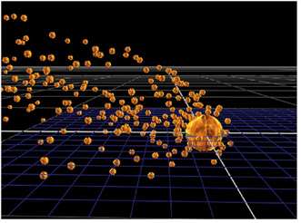

When applying gravity to particles, as opposed to our familiar gravity, Nuke doesn’t restrict you to a certain direction but works in any or all of the x, y and z directions. You can add gravity either by:
• Using the ParticleDirectionalForce to apply a directional force. Just connect it to your particle stream, and adjust the strength of the force in the x, y, and z directions by entering x, y, and z values in the strength fields.
OR
• Using the ParticleGravity node. When you connect the ParticleGravity node to your particle stream, an arrow appears in the Viewer, which you can then use to determine the direction and velocity of the gravity. The bigger and longer the arrow, the stronger the effect. Instead of adjusting the arrow, you can also use the controls in the properties panel:
• from - enter the point of origin for the gravity effect on the x, y, and z axis. This determines from which direction the force appears to come, indicated by the base of the arrow in the Viewer.
• to - enter direction for the gravity effect on the x, y, and z axis. This is indicated by the point of the arrow in the Viewer.
To align your particles’ motion, direction, and orientation, you can use two nodes:
• You can add the ParticleMotionAlign node in your particle stream to realign all the particles along their direction of motion. This is useful if your particles seem too rigid in their movement.
• Add the ParticleLookAt node to determine a 3D point that all the particles are looking toward. To specify this point, adjust the position control. The x, y and z coordinates specify the point that the particles are looking at.
The ParticleSpeedLimit node limits the particles to a specified minimum and maximum speed.
| 1. | Connect it to your particle stream. |
| 2. | In the properties panel, adjust: |
• minimum - the minimum speed at which each particle can travel.
• maximum - the maximum speed at which each particle can travel.
With the ParticlePointForce, you can attract particles to or repel them from a certain point in the 3D space.
| 1. | Connect the node to your particle stream. |
| 2. | Adjust the ParticlePointForce controls: |
• strength - set the strength of the force attracting or repelling particles. Negative values cause attraction, positive values repulsion.
• falloff - choose how quickly strength of the attraction falls off with respect to the distance by selecting the type of falloff, none for no falloff, inverse for inverse falloff, or inverse square for inverse falloff squared.
• radius - set the radius of influence. Outside of this radius, no particles are affected by point force.
• position - set the position of the point that attracts or repels particles. You can use an animated or a still Axis node expression-linked to these fields, or you can just enter a position value manually.
|
 |
| Particles attracted to a 3D point. |
|
|